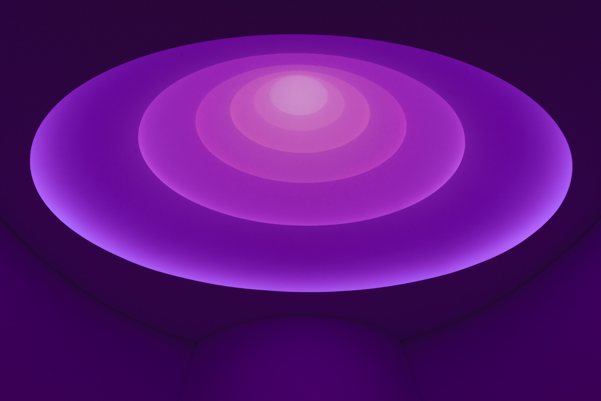
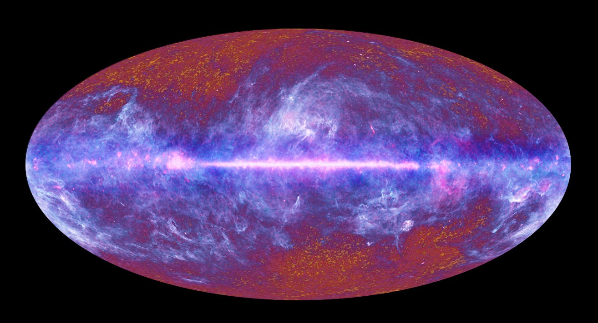
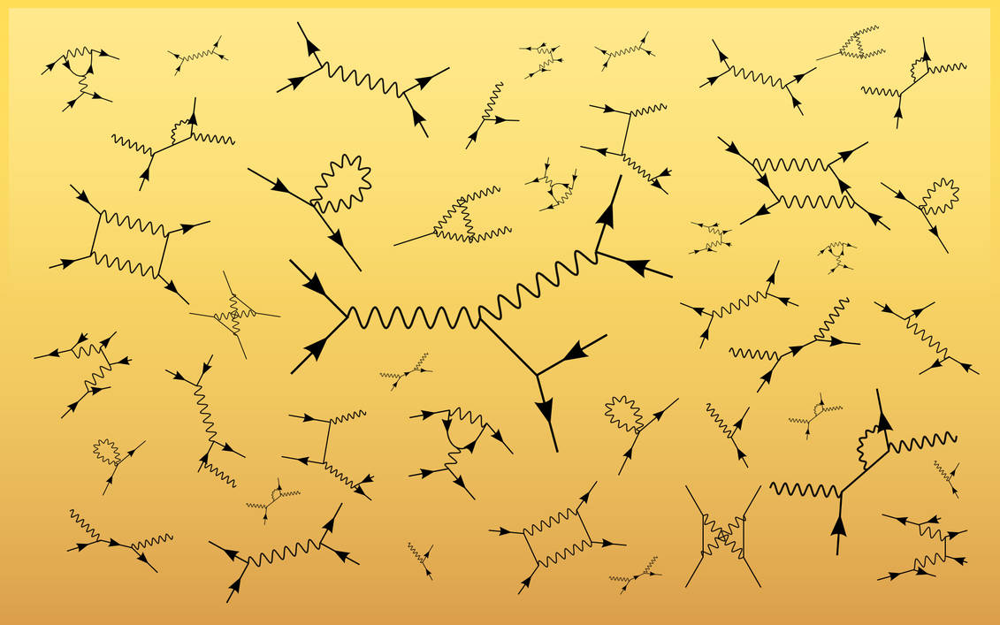

Physics
Looking Down
No-Affect
The farthest border: The limit of all possible experience. A limit so distant, nothing that ever happened beyond there-then, will ever cause anything, at any point in the future, in our galactic neighbourhood. At such a distance, the space between here-now and there-then grows faster than the speed of light. Like running on an elastic road, stretching faster apart than anything can ever run.
No-Action
There is a limit of all possible action. Nothing happening now, no causality, nor beam of energetic particles will ever reach beyond this cosmic boundary.
No-Time
At such distances, space and time become recognisably one. To move at the cosmic speed limit means to experience no time. We can see distant galaxies with our naked eyes: countless photons for whom the entire universe is a single point with no time. To you: a constructed perception of electrical impulses generated by cells in your eyes as they are excited by photons that have spent no time crossing endless space.
No-Mass

A star: An unimaginably large sphere of superheated Hydrogen, Helium, and other elements. A collection of mass so large it coalesces. Particles are forced onto each other until they merge, losing trace amounts of mass so small they can no longer exist as mass but become pure energy. The essence of all things. This energy cannot “exist” as mass exists. It is a cause, an effect. A chain of quantum dominos falling over and over and over and over. The energy follows its predestined route along the quantum highway until it is absorbed by some mass, something capable of soaking it unto itself. It moves so fast that from the perspective (if one can call it that) of the energy itself, time cannot tick, space is meaningless. For the seasoned observer, the energy follows its predestined route along the quantum highway, for a split second, or for a minute. For hundreds of thousands, if not billions of years.
No-Where
A chain of quantum dominos harnessed by metal (unlocked by burning, or by slowing the winds of the earth: In most cases a chain of cause and effect stemming from our sun - recently in the case of the winds, or otherwise in the case of burning - in rare cases: from the energy of suns long dead: metals deep in the earth, remnants of cataclysm of unimaginable scales.) transition from the chains of charge into the primal state of light, back to energy, locked in matter, released in charge, heat, countless paths to nowhere.
No-When
“[he] tried to live in the mere present, looking neither backward nor ahead; memories mattered less to him than his visions of the future. In some obscure way he thought he could sense that the past is the stuff that time is made of; that was why time became past so quickly.”
The Wait – Jorge Luis Borges (translation by Andrew Hurley)